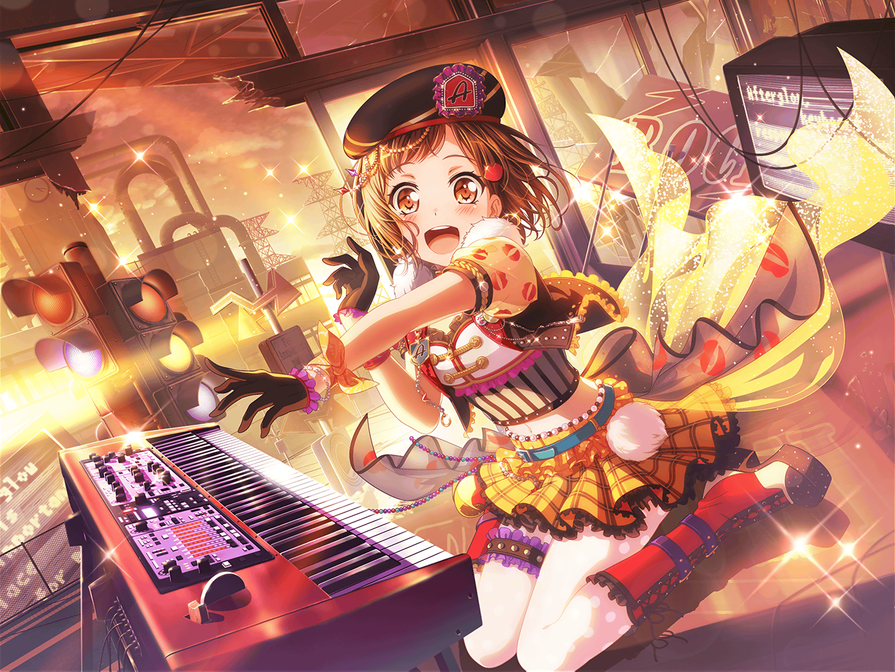

合同練習後
住宅地
つぐみ
練習始めた時は明るかったのに、
すっかり暗くなっちゃったね
蘭
うん、あんなに長い時間練習したのって、
ひさしぶりかも
つぐみ
うん！ すっごく疲れた……けど、
その分すっごく楽しかった！
蘭ちゃんは？
蘭
うん、あたしも楽しかったよ。
……けど
つぐみ
けど？
蘭
あの写真のことは、根に持つかも
つぐみ
ええっ！？ ご、ごめんね！
蘭
冗談だよ。
……あ、ひまりからメールきてる。
つぐみにもきてない？
つぐみ
ホントだ！
えーっと『今つぐの家にみんな集まってるよ～！
二人も早くおいで～！』だって
蘭
それじゃいこっか
つぐみ
うん！

羽沢珈琲店
ひまり
つぐ、おかえり～！
待ってたよー！
モカ
蘭もおかえり～
蘭
おかえりって……
あたしの家じゃないし
巴
まあまあ、細かいことは気にするなって！
それより二人とも練習お疲れ！
つぐみ
ありがとう、巴ちゃん！
みんなは、今日何してたの？
ひまり
えへへ、写真も送ったけど、
私達はあの後、衣装班でミニ打ち上げしたんだ～！
リサ先輩が、手作りクッキー持ってきてくれたの！
モカ
あたしは昨日の試食会の残りを
沙綾からもらって食べてました～
巴
な、なんか二人とも食ってばっかだな……
蘭
確かに……
巴
そ、それで？
つぐ達は合同練習どうだった？
つぐみ
すっごく楽しかったよ！
他のバンドのみんなと
練習するのって新鮮な感じだった！
蘭
そうだね。
まあまあだったかな
ひまり
蘭はまたそんなこと言って～！
写真、すっごく楽しそうだったよ！
モカ
蘭と湊さん、顔真っ赤だったよね～。
何があったの～？
蘭
べ、別に何もないけど……
巴
あはは、どうせまた湊さんと
ケンカでもしたんだろ～？
つぐみ
ふふっ、むしろその逆だよ！
二人ともすっごく息ぴったりだったんだから！
蘭
ちょ、つぐみ……！
ひまり
なになにっ！？ 気になる～！
蘭
もうその話はいいから！
ひまり
えー！
ま、その話はあとで詳しく聞くとして……
つぐは大丈夫？
つぐみ
え？ 大丈夫って、何が？
ひまり
つぐはさ、メニュー作りとか合同練習とかで、
私達より忙しいでしょ？
だから、また無理してないかなって
つぐみ
えへへ、心配してくれてありがとう！
けどちゃんと疲れた時はみんなにも相談するから大丈夫！
巴
あはは、そっか。
でもホント無理は禁物だぞ？
つぐみ
うん！
でもあんなにたくさんの人達とライブするのって初めてだし、
むしろ元気なくらいだよ！
モカ
ほほ～。
今日はまた一段とツグってますなぁ～
巴
でも確かに。
アタシ達以外の人達と一緒に何かするってこと自体、
あんまりないからな！
ひまり
うんうんっ！
五人で何かするのも楽しいけど、
こういうのもいいよね！
つぐみ
ふふっ、合同練習でも、
いろんな刺激をうけられたよね、蘭ちゃん？
蘭
ん、まあそうだね。
悪くはなかったかも
モカ
おぉ～。
蘭が素直にそう言うなんて珍しいですなぁ
蘭
……うるさいな
つぐみ
……えへへ
ひまり
ん？
どうしたの、つぐ？
つぐみ
ううん！
何だかみんなと話してたら、
やっぱりほっとするなって！
巴
あはは、なんかつぐらしいな
つぐみ
えへへ、そうかな？
何ていうか自分の家に帰ってきたみたいなんだよね！
一同
……
蘭
……ぷっ。
あはは！
ひまり
蘭～！ なんで笑っちゃうの～！
つぐみ
え、え！？
なんでみんな笑ってるの！？
モカ
つぐ～。
あたし達、今どこにいると思ってるわけ～？
つぐみ
それはうちの……あっ！
ひまり
あはは！
つぐってしっかりしてるのに、
たまにそういうところあるよね！
巴
まあ、そこがつぐのいいところでも
あるんだけどな～？
つぐみ
み、みんな笑いすぎだよ～！